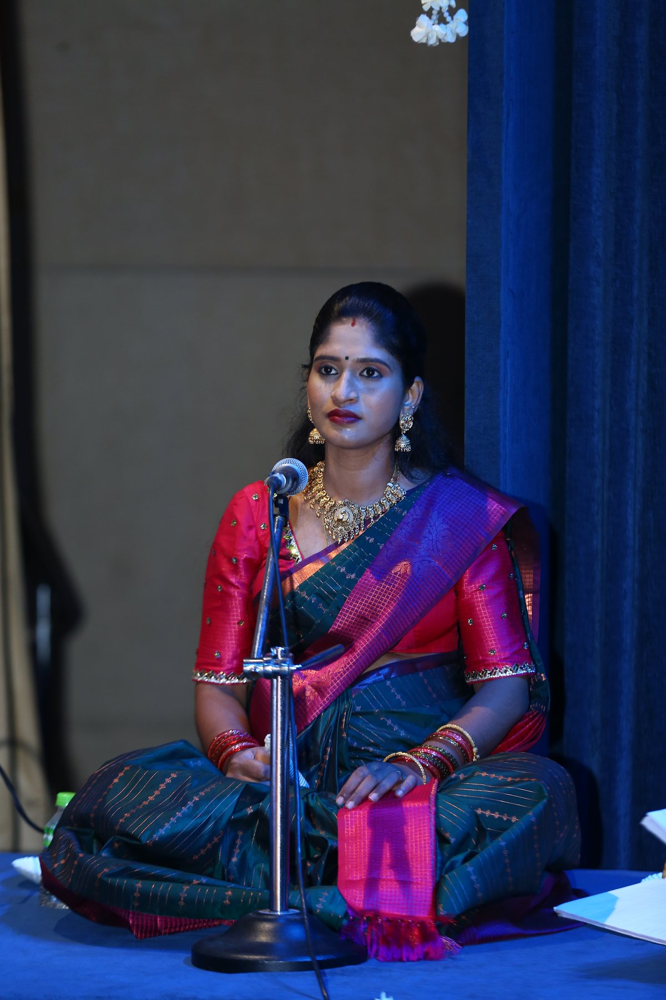

Foundation Practice
Beginner training, adavu practice, posture correction, rhythm, and disciplined regular practice.
Thulir Nrithyalaya Foundation
Led by Natya Nattuvangam Smt. Marai Mozhi Arasi J | Teaching since 2018
Traditional, structured Bharatanatyam training that develops technique, expression, discipline, confidence, and readiness for meaningful stage milestones.
About the foundation
Thulir Nrithyalaya Foundation is a Chennai-based not-for-profit arts and entertainment organization incorporated on December 26, 2023. Its formal establishment builds on Guru Marai Mozhi Arasi J's Bharatanatyam teaching and student mentorship, which began in 2018.
Under her leadership, the foundation promotes Bharatanatyam, supports learners through disciplined practice and personal guidance, and creates opportunities to grow through performances, workshops, cultural events, Salangai Poojai, and Arangetram preparation.
Vision
To nurture young dancers and preserve the classical tradition of Bharatanatyam for future generations.
Our mission is to provide structured Bharatanatyam training, encourage students through stage performances and cultural programs, and make Indian classical arts accessible to the community.

Guru
Natya Nattuvangam Smt. Marai Mozhi Arasi J is an eminent Bharatanatyam practitioner, dancer, choreographer, and founder of Thulir Nrithyalaya Foundation. Born and raised in Chennai, she began her dance journey at the age of eight.
She has been teaching and mentoring Bharatanatyam students since 2018. In December 2023, this continuing teaching and cultural work was formally established as Thulir Nrithyalaya Foundation, bringing years of practical student guidance into the foundation's mission.
After years of dedicated training under her Guru, Nattuvangam Visharada Smt. Dr. Maria Prakash, she performed in prominent television shows including Vijay TV, Kalaignar TV, and Jaya TV.
Her commitment to Bharatanatyam has earned her recognitions including Yuva Kalamani, Global Star Award, Rukmini Devi Arundale Award, and Natya Kalashri. Along with her artistic journey, she holds an MBA and further enriched her Natyashastra training under Smt. Vithya Arasu, founder of Natyakalavidyalaya.
Training
Led by Guru Marai Mozhi Arasi J, our classes offer structured, traditional learning that helps students develop technique, expression, discipline, confidence, and stage readiness.
Beginner training, adavu practice, posture correction, rhythm, and disciplined regular practice.
Mudras, abhinaya, theory, choreography, devotional expression, and classical presentation.
Performance preparation, Salangai Poojai guidance, Arangetram support, and cultural event exposure.
Located at Santhosapuram, near Medavakkam, Chennai, the foundation is accessible for students from Medavakkam, Santhosapuram, Vijayanagaram, Selaiyur, Tambaram, and nearby areas. Contact us to discuss the student's current learning level and goals.
Ask About ClassesActivities
Students are encouraged through Bharatanatyam performances, temple programs, cultural events, workshops, Salangai Poojai, Arangetram milestones, and recognized grade examinations.
A meaningful milestone where students begin their journey into committed stage practice.
Structured training and stage preparation for a student's formal Bharatanatyam debut.
Opportunities to perform in temple programs, cultural events, and community celebrations.
Preparation and examination coordination for students pursuing Bharatanatyam grades through government-recognized universities and authorized examining institutions.
Year-wise gallery
Explore Thulir Nrithyalaya Foundation activities year by year as new event photos are added.
Gallery
See real moments from our students' learning journeys, stage performances, cultural events, Salangai Poojai, Arangetram programs, and achievements.
Gallery photos will appear here after the gallery list is generated.
FAQ
Thulir Nrithyalaya Foundation is located at 8/332, 2nd Floor, Kambar Street, 2nd Main Road, Vijayanagaram, Santhosapuram, Medavakkam, Chennai, Tamil Nadu 600100.
Yes. The foundation offers structured Bharatanatyam training in adavus, mudras, abhinaya, rhythm, theory, and performance preparation.
The foundation is actively led by Natya Nattuvangam Smt. Marai Mozhi Arasi J, a Bharatanatyam practitioner, dancer, choreographer, and mentor.
She has been teaching and mentoring Bharatanatyam students since 2018. Thulir Nrithyalaya Foundation was later formally incorporated in Chennai on December 26, 2023.
You can call or WhatsApp +91 93846 45942, or email marai.jesu@gmail.com.
Contact
Ask about Bharatanatyam classes, student learning goals, performances, cultural event participation, or foundation activities by WhatsApp, phone, email, or an in-person visit.
8/332, 2nd Floor, Kambar Street, 2nd Main Road,